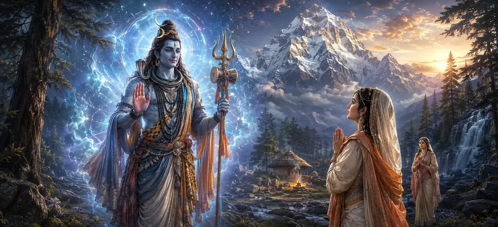

After hearing Pārvatī's unwavering defense of his glory and divine nature, Lord Shiva became immensely pleased. The purpose of his test had been fulfilled. The time had come to end the disguise of the wandering Brahmacārin and reveal the supreme truth. What followed became one of the most joyful and sacred moments in Pārvatī's spiritual journey.
The disguised Brahmacārin had questioned, challenged, and examined Pārvatī's devotion from many angles. Yet her faith never wavered. Shiva now knew that her love was pure, selfless, and firmly rooted in spiritual realization.
As the conversation reached its conclusion, the appearance of the young Brahmacārin began to change. The simple ascetic form gradually disappeared, and an indescribable divine radiance filled the surroundings.
Before Pārvatī stood Lord Shiva in his resplendent divine form. Adorned with celestial brilliance and immeasurable majesty, he revealed himself as the Supreme Lord whom she had worshipped through years of tapasya.
Seeing Shiva's true form, Pārvatī was overwhelmed with devotion and joy. The Lord whom she had loved, worshipped, and sought through countless austerities now stood before her. Her long spiritual quest had reached a glorious turning point.
Shiva addressed Pārvatī with affection and praise. He acknowledged her steadfast devotion, spiritual wisdom, and unwavering dedication. Every hardship she had endured had proven the greatness of her character.
The revelation confirmed that Pārvatī's years of austerity had not been in vain. Her devotion had earned the direct grace of Lord Shiva, and the sacred union she desired was now drawing near.
The Divine eventually reveals itself to sincere seekers.
Steadfast faith ultimately earns divine grace.
Patience and dedication lead to fulfillment.
The celestial beings who had watched Pārvatī's long journey rejoiced at this sacred moment. Her unwavering devotion had been vindicated, and the divine purpose behind her austerities had become clear to all.
The revelation of Shiva's true form teaches that sincere devotion is never ignored by the Divine. Though the path may involve trials and waiting, unwavering faith eventually leads to direct spiritual fulfillment and divine grace.
For Pārvatī, this revelation marked the end of uncertainty and longing. The Lord she had worshipped from the depths of her heart now stood before her, confirming that her devotion had achieved its sacred goal.
The revelation of Shiva's true form prepared the way for the sacred events that would soon follow. The long-awaited union of Shiva and Pārvatī was now approaching, bringing joy to the gods and blessings to the universe.
"When devotion remains unwavering, the Divine eventually reveals its true face."
Lord Shiva has now revealed his true divine form before Pārvatī, bringing her long period of austerity and devotion to a glorious turning point. Deeply pleased by her unwavering faith, he prepares to grant her heart's desire. Continue to the next chapter to witness how Shiva formally accepts Pārvatī and blesses the sacred union destined to benefit the entire universe.